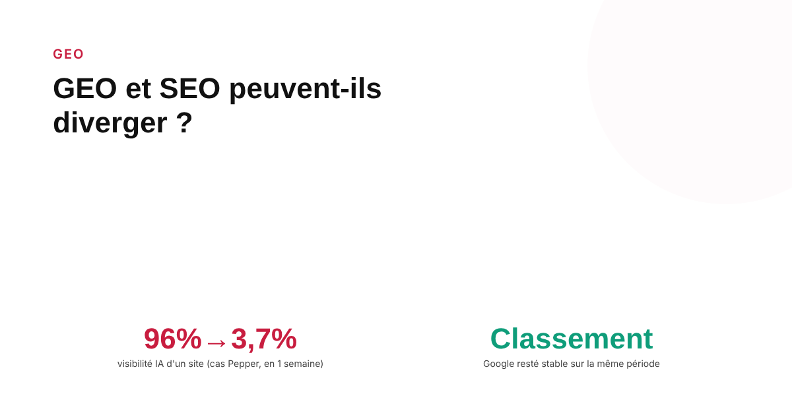
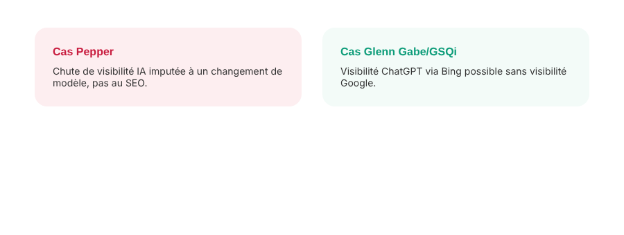

GEO et SEO peuvent-ils diverger ? Un site qui perd en visibilité IA sans perdre son classement Google
Un site peut-il garder exactement le même classement Google tout en voyant sa présence dans les réponses de ChatGPT ou des AI Overviews s'effondrer ? Des cas réels documentés répondent oui — mais pas toujours pour les raisons qu'on imagine.

L'hypothèse selon laquelle « bien classé sur Google = bien cité par les IA » reste une simplification commode, mais plusieurs cas documentés par des outils de suivi spécialisés montrent qu'elle ne tient pas toujours. Comprendre les mécanismes en cause évite de chercher une cause SEO à un problème qui n'en est pas un, ou inversement.
Un cas documenté : une chute de 96 % à 3,7 % en une semaine
Un cas rapporté par l'outil de suivi Pepper décrit une marque dont le taux de citation dans les AI Overviews de Google est passé de 96 % à 3,7 % en une seule semaine, sans qu'aucun changement n'ait été apporté au site concerné. L'explication avancée par l'auteur n'est pas un problème de classement : c'est un changement du modèle que Google utilise en coulisses pour générer les AI Overviews. Le classement classique du site n'a pas bougé ; seule la façon dont le système génératif sélectionne et cite les sources a changé.
Le cas inverse existe aussi : visible en IA, invisible sur Google
Le consultant SEO Glenn Gabe (GSQi), référence reconnue dans l'industrie, documente des cas allant dans l'autre sens : un site avec une visibilité quasi nulle sur Google peut connaître une forte présence dans les réponses de ChatGPT, souvent via de bons classements sur Bing — moteur qui alimente certaines fonctions de recherche utilisées par ChatGPT. La divergence n'est donc pas à sens unique : un acteur peut être fort en GEO et faible en SEO classique, ou l'inverse, selon le moteur qui alimente réellement la réponse générative concernée.

Un contre-exemple instructif : quand les deux chutent ensemble
Le cas de Grokipedia, documenté par les outils de suivi Peec AI et ALM Corp, montre à l'inverse une baisse simultanée du classement Google et des citations dans les AI Overviews, l'AI Mode et ChatGPT, survenue au même moment. Ce cas rappelle que la divergence SEO/GEO n'est pas la norme : dans beaucoup de situations, les deux signaux restent corrélés, parce qu'ils s'appuient en partie sur des signaux de qualité et d'autorité communs.
Un artefact de mesure à ne pas confondre avec une vraie divergence
Une analyse de Search Engine Land sur les AI Overviews en France relève un autre phénomène : certains sites avec des clics et des impressions stables dans Search Console voient malgré tout des variations de position apparente, ce que Glenn Gabe attribue possiblement à la façon dont Search Console comptabilise les citations à l'intérieur d'un AI Overview repliable. Avant de conclure à une vraie divergence SEO/GEO, il faut donc écarter l'hypothèse d'un simple artefact de la méthode de mesure.
Ce que ça implique pour le suivi d'un site
Le classement Google classique et la présence dans les réponses génératives méritent un suivi distinct, avec des outils adaptés à chacun : Search Console pour le premier, un outil de suivi de citations IA pour le second. Les chiffres de chevauchement publiés par certains éditeurs d'outils (parfois annoncés autour de 45 à 67 % selon la source) restent des estimations commerciales, pas des constantes scientifiquement établies — ils donnent un ordre de grandeur utile, pas une vérité universelle à citer sans précaution. Un site qui chute dans un seul des deux suivis, pas dans l'autre, mérite une investigation séparée plutôt qu'une correction SEO automatique qui pourrait ne traiter ni la vraie cause ni le vrai symptôme.
FAQ
Un site peut-il vraiment perdre en visibilité dans les IA génératives sans que son classement Google ne bouge ?
Oui, des cas documentés par des outils de suivi existent. L'un des plus cités rapporte le taux de citation d'une marque dans les AI Overviews passant de 96 % à 3,7 % en une semaine, sans aucun changement sur le site concerné — ce que l'auteur attribue à un changement du modèle utilisé par Google pour générer les AI Overviews, pas à une évolution du classement classique.
Les classements Google et les citations dans les réponses IA se recoupent-ils largement ?
Pas systématiquement, selon plusieurs outils de suivi spécialisés qui publient des chiffres de chevauchement : l'un rapporte que 67 % des URLs citées par ChatGPT n'apparaissent jamais dans les AI Overviews pour la même requête, un autre évoque un chevauchement d'environ 45 % entre classement classique et visibilité IA. Ces chiffres viennent d'éditeurs d'outils commerciaux, pas d'études indépendantes, et doivent être traités comme des ordres de grandeur, pas des constantes universelles.
La divergence SEO/GEO va-t-elle toujours dans le sens d'une perte de visibilité IA, jamais l'inverse ?
Non. Le consultant SEO Glenn Gabe documente aussi le cas inverse : un site avec peu ou pas de visibilité dans Google peut connaître une forte visibilité dans ChatGPT, notamment via des classements solides sur Bing, le moteur qui alimente certaines fonctions de recherche de ChatGPT. La divergence peut jouer dans les deux sens, selon le mécanisme en cause.
Envie d'un suivi distinct de votre visibilité SEO et de votre visibilité IA ?
Pour aller plus loin, voir la page GEO, et l'article Ce qui change vraiment entre le SEO et le GEO (et ce qui ne change pas).
Pour continuer sur ce sujet.